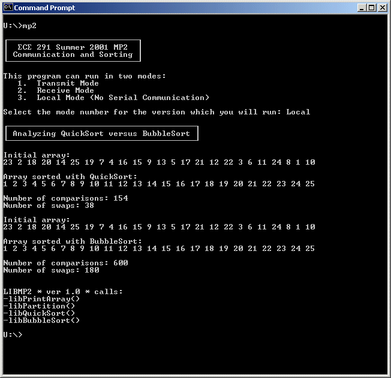

| Assigned | Thursday, 6/21/01 |
| Due Date | Tuesday, 7/3/01 |
| Purpose | Serial Port I/O, C-style Procedures, Sorting Algorithms |
| Points | 75 |
I'm too tired to think of an introduction... sorry.

Your program will be:
Click on the links above to learn more about each part of the MP.
This assignment has seven procedures. You will receive credit by replacing each of these seven procedures listed below with your own code.
Each of the procedures you will write in this MP are C-style. That means the inputs to the procedures, if there are any, are passed on the stack. If the procedure returns a value, the value will be in al or ax. Also, any general purpose register other than si and di may be overwritten (you do not have to preserve their values).
The size of the inputs, as well as the size of the return value, are included in each procedure definition. If a procedure does not have any inputs, void will be present in the parentheses. Similarly, if the function does not return a value, it will be declared as void before the name of the function.
; MP2 - Communication and Sorting
; Your Name
; Today's Date
;
; Josh Potts, Summer 2001
; Guest Author: Ryan Chmiel
; University of Illinois, Urbana-Champaign
; Dept. of Electrical and Computer Engineering
;
; Version 1.0
BITS 16
;====== SECTION 1: Define constants =======================================
; Define general constants
CR EQU 0Dh
LF EQU 0Ah
ESC EQU 1Bh
SPACE EQU 20h
BACKSPACE EQU 08h
; Define COM port constants
COM1BASE EQU 03F8h
COM2BASE EQU 02F8h
BAUDRATE EQU 12
PARAMS EQU 03h
;====== SECTION 2: Declare external routines ==============================
; Declare external library routines
EXTERN kbdin, kbdine, dspmsg, ascbin, binasc, dosxit, dspout
EXTERN libTransmitInput, libReceiveInput, libParseInput, libPrintArray
EXTERN libPartition, libQuickSort, libBubbleSort, mp2xit
; Make program functions and variables global
GLOBAL TransmitInput, ReceiveInput, ParseInput, PrintArray
GLOBAL Partition, QuickSort, BubbleSort
GLOBAL EnterString, CompareCount, SwapCount, binascBuf, TestArrayBubble, TestArrayQuick
GLOBAL DataString, Array, ArrayLen
;====== SECTION 3: Define stack segment ===================================
SEGMENT stkseg STACK ; *** STACK SEGMENT ***
resb 64*8
stacktop:
resb 0 ; work around NASM bug
;====== SECTION 4: Define code segment ====================================
SEGMENT code ; *** CODE SEGMENT ***
;====== SECTION 5: Declare variables for main procedure ===================
IntroString db CR,LF
db 0DAh
times 27 db 0C4h
db 0BFh, CR, LF
db 0B3h, ' ', 228, 'C', 228, ' 291 Summer 2001 MP2 ', 0B3h, CR, LF
db 0B3h, ' Communication and Sorting ', 0B3h, CR, LF
db 0C0h
times 27 db 0C4h
db 0D9h, CR, LF, '$'
SelectString db CR,LF
db 'This program can run in two modes:',CR,LF
db ' 1. Transmit Mode',CR,LF
db ' 2. Receive Mode',CR,LF
db ' 3. Local Mode (No Serial Communication)',CR,LF
db CR,LF
db 'Select the mode number for the version which you will run: ','$'
AnalyzeString db 0DAh
times 39 db 0C4h
db 0BFh, CR, LF
db 0B3h, ' Analyzing QuickSort versus BubbleSort ', 0B3h, CR, LF
db 0C0h
times 39 db 0C4h
db 0D9h, CR, LF, CR, LF, '$'
TransmitString db 'Transmit',CR,LF,CR,LF,'$'
ReceiveString db 'Receive',CR,LF,CR,LF,'$'
LocalString db 'Local',CR,LF,CR,LF,'$'
InvalidString db 'Invalid Choice!',CR,LF,'$'
InputMsgString db 'Enter a string of numbers, each separated by one space:',CR,LF,'$'
ErrorString db 'Error encountered in parsing input!',CR,LF,'$'
InputDataString db 'Input data string:',CR,LF,'$'
InitialArrayString db 'Initial array:',CR,LF,'$'
SortQuickString db 'Array sorted with QuickSort:',CR,LF,'$'
SortBubbleString db 'Array sorted with BubbleSort:',CR,LF,'$'
CompareString db 'Number of comparisons: ','$'
SwapString db 'Number of swaps: ','$'
EnterString db CR,LF,'$'
DataString times 76 db 0
Array times 25 dw 0
ArrayLen dw 0
TestArrayBubble dw 23, 2, 18, 20, 14, 25, 19, 7, 4, 16, 15, 9, 13, 5, 17, 21, 12, 22, 3, 6, 11, 24, 8, 1, 10
TestArrayQuick dw 23, 2, 18, 20, 14, 25, 19, 7, 4, 16, 15, 9, 13, 5, 17, 21, 12, 22, 3, 6, 11, 24, 8, 1, 10
CompareCount dw 0
SwapCount dw 0
binascBuf times 7 db 0,'$'
;====== SECTION 6: Program initialization =================================
..start:
mov ax, cs ; Initialize Default Segment register
mov ds, ax
mov ax, stkseg ; Initialize Stack Segment register
mov ss, ax
mov sp, stacktop ; Initialize Stack Pointer register
;====== SECTION 7: Main procedure =========================================
MAIN:
mov dx, IntroString
call dspmsg
.SelectLoop
mov dx, SelectString
call dspmsg
call kbdin
cmp al, ESC
je near .Done
cmp al, '1'
je .TransmitMode
cmp al, '2'
je .ReceiveMode
cmp al, '3'
je near .LocalMode
mov dx, InvalidString
call dspmsg
jmp .SelectLoop
.TransmitMode
; Initialize COM2
call InitCOM2
; Print Out Messages
mov dx, TransmitString
call dspmsg
mov dx, InputMsgString
call dspmsg
; Transmit input to receiving program
call TransmitInput
jmp .Done
.ReceiveMode
; Initialize COM1
call InitCOM1
; Print Out Messages
mov dx, ReceiveString
call dspmsg
mov dx, InputDataString
call dspmsg
; Receive input from transmitting program
push word DataString
call ReceiveInput
add sp, 2
mov dx, EnterString
call dspmsg
call dspmsg
; Parse the input string
mov ax, Array
push ax
mov ax, DataString
push ax
call ParseInput
add sp, 4
cmp al, 0
js near .Error
mov [ArrayLen], ax
; Print out the initial array
mov dx, InitialArrayString
call dspmsg
push word [ArrayLen]
push word Array
call PrintArray
add sp, 4
; Sort the array with QuickSort
mov ax, [ArrayLen]
dec ax
push ax
push word 0
push word Array
call QuickSort
add sp, 6
; Print out the sorted array
mov dx, SortQuickString
call dspmsg
push word [ArrayLen]
push word Array
call PrintArray
add sp, 4
jmp .Done
.LocalMode
; Print Messages
mov dx, LocalString
call dspmsg
mov dx, AnalyzeString
call dspmsg
; Print out initial array
mov dx, InitialArrayString
call dspmsg
push word 25
push word TestArrayQuick
call PrintArray
add sp, 4
; Sort array with QuickSort
mov word [CompareCount], 0
mov word [SwapCount], 0
push word 24
push word 0
push word TestArrayQuick
call QuickSort
add sp, 6
; Print out sorted array
mov dx, SortQuickString
call dspmsg
push word 25
push word TestArrayQuick
call PrintArray
add sp, 4
; Print out comparison and swap info
mov dx, CompareString
call dspmsg
mov ax, [CompareCount]
mov bx, binascBuf
call binasc
mov dx, bx
call dspmsg
mov dx, EnterString
call dspmsg
mov dx, SwapString
call dspmsg
mov ax, [SwapCount]
mov bx, binascBuf
call binasc
mov dx, bx
call dspmsg
mov dx, EnterString
call dspmsg
call dspmsg
; Print out initial array
mov dx, InitialArrayString
call dspmsg
push word 25
push word TestArrayBubble
call PrintArray
add sp, 4
; Sort array using BubbleSort
mov word [CompareCount], 0
mov word [SwapCount], 0
push word 25
push word TestArrayBubble
call BubbleSort
add sp, 4
; Print out sorted array
mov dx, SortBubbleString
call dspmsg
push word 25
push word TestArrayBubble
call PrintArray
add sp, 4
; Print out comparison and swap info
mov dx, CompareString
call dspmsg
mov ax, [CompareCount]
mov bx, binascBuf
call binasc
mov dx, bx
call dspmsg
mov dx, EnterString
call dspmsg
mov dx, SwapString
call dspmsg
mov ax, [SwapCount]
mov bx, binascBuf
call binasc
mov dx, bx
call dspmsg
mov dx, EnterString
call dspmsg
call dspmsg
jmp .Done
.Error
mov dx, ErrorString
call dspmsg
.Done
call mp2xit
;====== SECTION 8: Your subroutines =======================================
;--------------------------------------------------------------
;-- Replace library calls with your code! --
;-- [Save all reg values that you modify] --
;-- Do not forget to add function headers --
;--------------------------------------------------------------
;--------------------------------------------------------------
;-- TransmitInput() --
;--------------------------------------------------------------
TransmitInput
call libTransmitInput
ret
;--------------------------------------------------------------
;-- ReceiveInput() --
;--------------------------------------------------------------
ReceiveInput
push bp
mov bp, sp
push word [bp+4]
call libReceiveInput
add sp, 2
pop bp
ret
;--------------------------------------------------------------
;-- ParseInput() --
;--------------------------------------------------------------
ParseInput
push bp
mov bp, sp
push word [bp+6]
push word [bp+4]
call libParseInput
add sp, 4
pop bp
ret
;--------------------------------------------------------------
;-- PrintArray() --
;--------------------------------------------------------------
PrintArray
push bp
mov bp, sp
push word [bp+6]
push word [bp+4]
call libPrintArray
add sp, 4
pop bp
ret
;--------------------------------------------------------------
;-- Partition() --
;--------------------------------------------------------------
Partition
push bp
mov bp, sp
push word [bp+8]
push word [bp+6]
push word [bp+4]
call libPartition
add sp, 6
pop bp
ret
;--------------------------------------------------------------
;-- QuickSort() --
;--------------------------------------------------------------
QuickSort
push bp
mov bp, sp
push word [bp+8]
push word [bp+6]
push word [bp+4]
call libQuickSort
add sp, 6
pop bp
ret
;--------------------------------------------------------------
;-- BubbleSort() --
;--------------------------------------------------------------
BubbleSort
push bp
mov bp, sp
push word [bp+6]
push word [bp+4]
call libBubbleSort
add sp, 4
pop bp
ret
;--------------------------------------------------------------
;-- InitCOM1() --
;--------------------------------------------------------------
InitCOM1
push ax
push dx
mov dx, COM1BASE+3 ; LCR
mov al, 80h
out dx, al
mov dx, COM1BASE ; divisor
mov ax, BAUDRATE
out dx, al
mov dx, COM1BASE+3 ; LCR
mov al, PARAMS ; control params
out dx, al
pop dx
pop ax
ret
;--------------------------------------------------------------
;-- InitCOM2() --
;--------------------------------------------------------------
InitCOM2
push ax
push dx
mov dx, COM2BASE+3 ; LCR
mov al, 80h
out dx, al
mov dx, COM2BASE ; divisor
mov ax, BAUDRATE
out dx, al
mov dx, COM2BASE+3 ; LCR
mov al, PARAMS ; control params
out dx, al
pop dx
pop ax
ret